飞书文档版
- 优势:适合协作、评论、权限管理、团队知识库沉淀, 图文和白板可以被继续编辑。
- 优势:与现有 paper-learning-workflow 的 sentinel/read-back/公式/图片验证闭环一致, 审计链更强。
- 劣势:排版自由度受限, 长文档目录、图表就近阅读和跨章节扫读体验不如网页。
- 劣势:媒体和公式依赖飞书解析器, 会遇到白板导入、100x100 图片、公式 parser 等平台特定问题。
基于已完成并验证的 paper-learning-workflow 飞书深度解析结果生成。此版本优化为网页阅读:固定目录、摘要卡片、响应式表格、内嵌图像和 Mermaid 图示。
7B VLA 只靠稀疏动作 token 监督, 表征容量无法被充分激活。
训练时预测视觉世界状态, 推理时丢弃 WM, 保留规划收益。
70M 帧下 WM 持续增益, NuPlan 到 NAVSIM 迁移从负迁移转为正迁移。
500M expert 降低延迟, 同时改善 PDMS, 是部署侧关键。
| 使用场景 | 推荐格式 | 原因 |
|---|---|---|
| 团队内持续协作、批注、沉淀 | 飞书 | 权限、评论、历史版本和知识库组织更好。 |
| 个人深读、路演展示、对外分享 | HTML | 排版可控、加载快、目录和图表阅读体验更好。 |
| 需要最强审计闭环 | 飞书 + 本地 HTML | 飞书保留验证链, HTML 提供可读展示层。 |
| Check | Result | Evidence |
|---|---|---|
| Feishu v9.6 manual read-back | Done | Manual title read back from Feishu; total length about 94k chars |
| Codex skill path | Done | C:/Users/tianxl/.codex/skills/paper-learning-workflow/ |
| Codex adapter | Done | references/codex_adapter.md maps paths, tool names, reviewer fallback, and Windows command forms |
| Skill validator | Passed | quick_validate.py returned Skill is valid! |
| Formula smoke | Passed | Feishu docx create followed by verify_formulas_post_write.py returned 0 issue(s) |
| Whiteboard smoke | Passed | Whiteboard token was extracted from docx blocks; board import then board nodes returned more than 5 nodes |
| Reviewer mode | Codex main-thread fallback | Claude Agent(...) is unavailable in this runtime, so the adapter's reviewer fallback is recorded in progress.md |
论文:DriveVLA-W0: World Models Amplify Data Scaling Law in Autonomous Driving
作者:Yingyan Li*, Shuyao Shang*, Weisong Liu*, Bing Zhan*, Haochen Wang*, Yuqi Wang, Yuntao Chen, Xiaoman Wang, Yasong An, Chufeng Tang, Lu Hou, Lue Fan✉, Zhaoxiang Zhang✉
单位:NLPR · CASIA(中科院自动化所) + 引望智能
arXiv:https://arxiv.org/abs/2510.12796" target="_blank" rel="noopener noreferrer">2510.12796(v1 2025-10-14 / v2 2025-12-18 / ICLR 2026 submission)
代码:https://github.com/BraveGroup/DriveVLA-W0" target="_blank" rel="noopener noreferrer">BraveGroup/DriveVLA-W0(349 stars / 23 forks, 最新 commit 2026-02-11)
权重:https://huggingface.co/liyingyan/DriveVLA-W0" target="_blank" rel="noopener noreferrer">HuggingFace
v3 相对 v2 pipeline 的增量:飞书跨 12 篇关联论文交叉对比、Paper vs Code 25 条对照(10 条未披露)、Issue/PR 深度挖掘(GT action leak 嫌疑)、复现 Cheatsheet 40+ 超参、adaLN/CFG/Beta(1.5,1.0) 论文未写但代码必须项、关键模块细节展开、历史 Surprises 逐条自检
| 术语 | 全称与含义 | 在本文的作用 |
|---|---|---|
| VLA | Vision-Language-Action 模型 | 主干范式,把视觉 / 语言 / 动作统一到一个 autoregressive transformer |
| VLM | Vision-Language Model(Emu3 8B / Qwen2.5-VL 7B) | VLA 的起点,两种代表 backbone |
| Supervision Deficit | 监督缺失:7B 参数模型仅由稀疏动作 token 监督,维度 × 信息量严重不匹配 | 本文命名的核心瓶颈 |
| AR World Model | Autoregressive World Model,对当前帧 V_t 的 discrete visual token 做 next-token prediction |
VQ 路径(DriveVLA-W0 VQ)的 WM 形式 |
| Diffusion World Model | Latent diffusion / flow matching,对未来帧 I_{t+1} 的 VAE latent 去噪(代码里实际是 flow matching) |
ViT 路径(DriveVLA-W0 ViT)的 WM 形式 |
| FAST Tokenizer | Pertsch et al. 2025,把连续 waypoint 轨迹 DCT + BPE 压成变长 discrete token | 让 VLM 能 autoregressive 地"说"出动作 |
| MoVQGAN | Multi-scale VQ-GAN(码本 32768),Emu3 原装的视觉 tokenizer + 解码器 | AR WM 可视化时把 visual tokens 渲染回图像 |
| MoE Action Expert | 500M 参数的轻量 expert,代码实为 仅 2 层 transformer,与 8B VLA expert 并行 | Stage 2 推理时只跑 expert,省 37% 延迟 |
| Joint Attention | Q=[Q_VLA;Q_AE], K=[K_VLA;K_AE], V=[V_VLA;V_AE] 后做统一 attention 再拆回 |
比 cross-attention 对称,避免显式路由网络 |
| 6VA / 2VA | {vision, action} pair 的历史步数符号:6VA=6 步历史,2VA=2 步历史 |
Stage 1 预训练用 6VA,Stage 2 微调用 2VA |
| PDMS / EPDMS | NAVSIM v1 / v2 的 Predictive Driver Model Score | 核心评估指标 |
| Best-of-N(BoN) | 采样 N 条轨迹用规则 metric 再选 best | VLA 输出多样性天然支持,NAVSIM v1 BoN 升到 93.0 |
| adaLN-Zero(代码层) | DiT 风格 adaLN_modulation = [shift, scale, gate] × 2(论文未写) |
MoE expert 内 TransformerBlock 用 timestep+label 条件调制 |
| CFG(代码层) | Classifier-Free Guidance,forward_with_cfg 函数(论文未写) |
Diffusion/Flow WM 可视化用,class_dropout_prob=0.1 |
| Beta(1.5, 1.0)(代码层) | Flow Matching 时间步采样分布,偏 τ→0 清洁侧(论文未写) | π0/RFM 最佳实践继承 |
| null_prompt_prob=0.15(代码层) | 训练时 15% 文本 prompt dropout(论文未写) | CFG 式文本条件 dropout |
| Anchor Q-Former | Query-based anchor 变体:256 queries + 8192 K-means 轨迹 anchor(论文未写) | 仅 anchor 版本权重可用,PDMS 90.2 来自此 |
| pre_action | 3 步历史 ego waypoint,始终可见无 dropout(论文几乎未提) | 强 kinematic prior,复现时若未按此注入会掉分 |
作者在 §1 L4-L12 列出的行业现状 + 矛盾:
作者原文关键判断(§1 L10-L12)翻译:这不是数据量问题,是监督信号的维度 × 密度问题。作者进一步观察到:在没有足够监督的情况下,大 VLA 模型甚至会跑输小的 BEV 专用模型(§1 L12,后面 Table 5 VLA-VQ 7B 在 NuPlan→NAVSIM 确实只有 62.2 PDMS,而 TransFuser-50M 在 scratch 就有 79.2 PDMS)。
| # | 核心主张 | 论文位置 |
|---|---|---|
| C1 | VLA 存在 supervision deficit 瓶颈,通过 world modeling 提供 dense 自监督可破解 | §1 L14-L16 / §3.2 L38-L40 |
| C2 | 对 VQ 类 VLA(Emu3)用 AR WM(next-token prediction on current frame V_t);对 ViT 类 VLA(Qwen2.5-VL)用 Diffusion WM(predict future frame I_{t+1}) |
§3.2 L41-L68 |
| C3 | World modeling 提升跨域迁移:baseline 负迁移(TransFuser-7B −8.1%、VLA-VQ −9.5%)→ VLA-W0 正迁移(VQ +6.1%、ViT +1.7%) | §5.2 Table 5 |
Figure 9: NuPlan to NAVSIM transfer flip
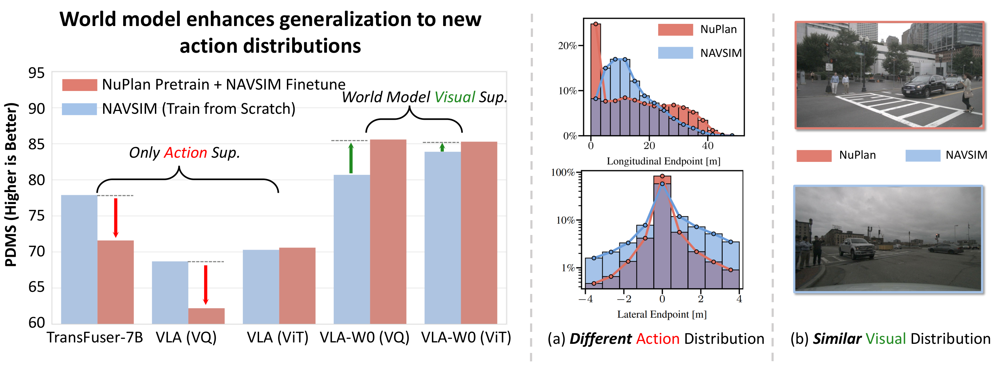
Figure 9: NuPlan to NAVSIM transfer flip
Action-only baselines lose cross-domain performance while DriveVLA-W0 gains from world modeling.
| C4 | World modeling 放大 data scaling law:70k→70M 下 VLA-W0 持续改进,baseline 饱和;70M 时 VQ ADE +28.8%、ViT 碰撞率 +15.9% | §5.2 Table 3 |
| C5 | 轻量 500M MoE Action Expert 把延迟降到 63.1%,同时反而涨点 88.4 PDMS | §3.3 + §5.3 Latency |
| C6 | Action decoder 存在 scaling 反转:小数据 query-based 领先,大数据 AR 反超 flow matching | §5.3 Table 4 + §5.3 L87-L89 |
作者声称的 3 个核心贡献(§1 L26-L32):
Figure 5: Inference flow with cached VLA features
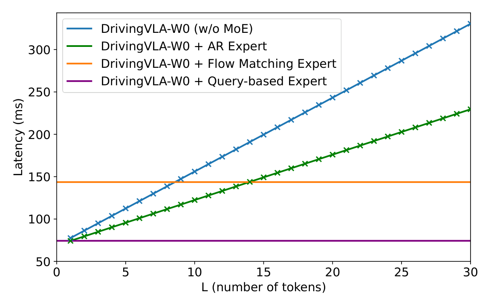
Figure 5: Inference flow with cached VLA features
During inference, VLA features are cached once, the world model is skipped, and the action expert decodes waypoints.
flowchart TB A[Front camera and history] --> B[Tokenize] B --> C[VLA forward once] C --> D[Cache visual and action features] D --> E[Skip world model] D --> F[Action expert decode] F --> G[FAST detokenize if AR] G --> H[Six future waypoints] E -. no inference cost .-> H
flowchart TB
A[Front camera and history] --> B[Tokenize]
B --> C[VLA forward once]
C --> D[Cache visual and action features]
D --> E[Skip world model]
D --> F[Action expert decode]
F --> G[FAST detokenize if AR]
G --> H[Six future waypoints]
E -. no inference cost .-> H
Figure 1: DriveVLA-W0 overall architecture
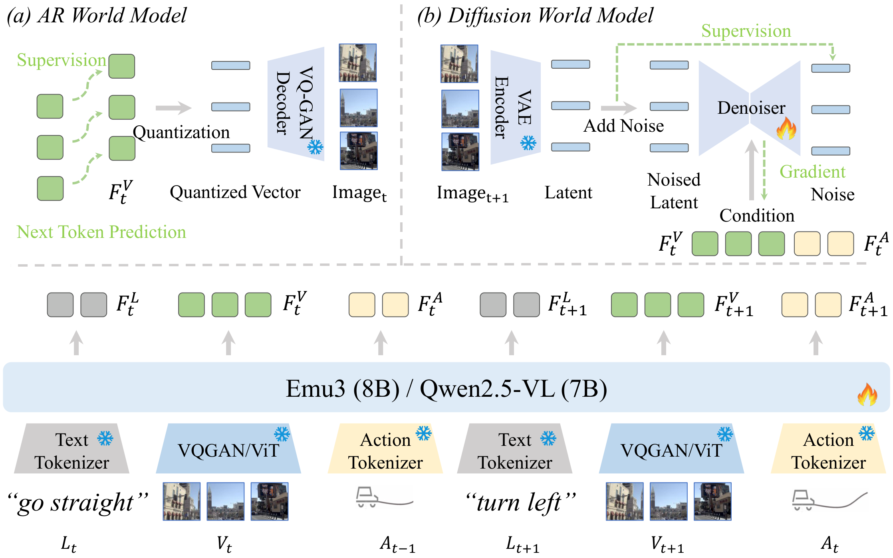
Figure 1: DriveVLA-W0 overall architecture
前视图像、语言指令、历史动作形成长序列。
训练目标主要是几个 waypoint/action token,梯度密度低。
大 VLA 的视觉和动态表征能力没有被充分激活。
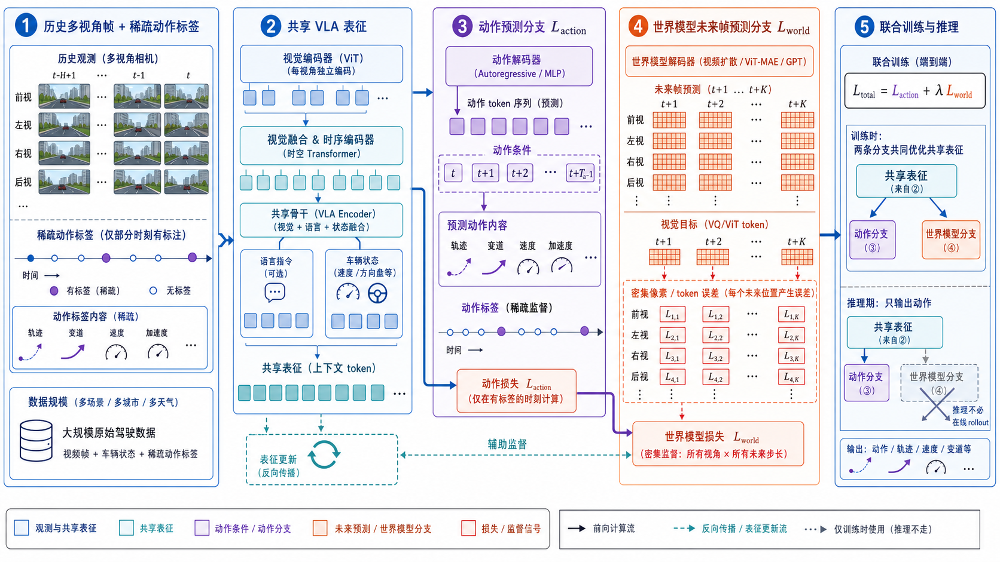
这张图是为 HTML 报告生成的原理说明图,用于辅助解释监督缺失和密集世界建模监督的关系;它不是论文原图,也不承载论文实验数据。
Main chain from tokenization and VLA backbone to training-only world model and inference-time action expert.
flowchart LR A[Language image history action] --> B[Tokenizers] B --> C[VLA backbone] C --> D[Visual and action features] D --> E[Training only world model] D --> F[MoE action expert] F --> G[Future waypoints] E -. skipped at inference .-> G B --> H[FAST action tokens] H --> F
flowchart LR
A[Language image history action] --> B[Tokenizers]
B --> C[VLA backbone]
C --> D[Visual and action features]
D --> E[Training only world model]
D --> F[MoE action expert]
F --> G[Future waypoints]
E -. skipped at inference .-> G
B --> H[FAST action tokens]
H --> F
图 1 展示 DriveVLA-W0 的完整 pipeline:输入 tokenization → VLA backbone(32 层 causal transformer) → World Model(训练时,推理时完全丢弃) → MoE Action Expert(500M,Stage 2 引入) → 未来轨迹输出。
| 模态 | Tokenizer | 产出 | 关键细节 |
|---|---|---|---|
语言指令 L_t |
VLM 原生 tokenizer(BPE) | 离散 token ID | 导航粗粒度(Turn Left / Straight / Right 3 类) |
前视图像 V_t (VQ 路径) |
Emu3 内置 MoVQGAN 量化器 | 离散 visual token(码本 32768) | 图像 256×144 → 约 256 token / 帧 |
前视图像 V_t (ViT 路径) |
Qwen2.5-VL 的 SigLIP ViT | 连续特征向量 | 保留梯度可导,便于 diffusion WM |
历史动作 A_{t-1} |
FAST tokenizer(Pertsch 2025) | 变长 discrete action token | NAVSIM 平均 5.6 token / 轨迹;内部数据集 17.8 token / 轨迹 |
FAST tokenizer 代码级细节(Phase 3 补充):
Figure 6: FAST tokenizer action codec Continuous waypoints become action tokens through DCT, quantization, character mapping, and BPE.
flowchart LR A[Continuous waypoints] --> B[DCT transform] B --> C[Scale and round] C --> D[Integer to character map] D --> E[BPE encoder] E --> F[Action tokens] F --> G[BPE decoder] G --> H[Inverse DCT] H --> I[Recovered waypoints]
flowchart LR
A[Continuous waypoints] --> B[DCT transform]
B --> C[Scale and round]
C --> D[Integer to character map]
D --> E[BPE encoder]
E --> F[Action tokens]
F --> G[BPE decoder]
G --> H[Inverse DCT]
H --> I[Recovered waypoints]
configs/fast/processor_config.json):scale=10, vocab_size=2048, min_token=-354dct(action_chunk, axis=1, norm="ortho") + np.around(dct_coeff * scale) 量化 + 字符映射 + BPE 编码scale=10 / vocab_size=2048 / min_token=-354 这 3 个 load-bearing 值,Issue #1 有 47 条评论讨论 tokenizer 调试每时刻 t 构建长度约 H=6 步的 interleaved 多模态序列:
该序列由 VLM 以因果注意力自回归处理,输出最终层 hidden state,然后按 token 位置拆分为 F_L / F_V / F_A 三段。
| 参数 | VQ(Emu3) | ViT(Qwen2.5-VL) | 代码位置 |
|---|---|---|---|
| 骨干参数量 | ~8B | ~7B | — |
| hidden_size | 4096 | 4096 | configs/moe_fast_video.json:13 |
| num_layers | 32 | 32 | 同上 |
| num_heads(Q/KV,GQA) | 32 / 8 | 32 / 8 | 同上 |
| intermediate_size | 14336 | 14336 | 同上 |
| vocab_size | 184622 | — | 同上 |
| rope_theta | 1e6 | 1e6 | 同上 |
历史长度 H |
6 预训练 / 2 微调 | 6 预训练 / 2 微调 | 训练脚本 |
训练时优化真值 action token 序列 A_t = (a_1, ..., a_M) 的 next-token CE:
推理时自回归 sample,再经 FAST detokenizer 反解成连续 waypoint。代码里 action_loss_weight 默认值是 10.0,但所有 Stage 2 脚本 CLI override 为 1.0,Stage 1 pretrain 无 override 所以实际是 10.0(train_navsim_ar.sh:69 vs utils/train_ar.py:103),此 α 调度论文未披露。
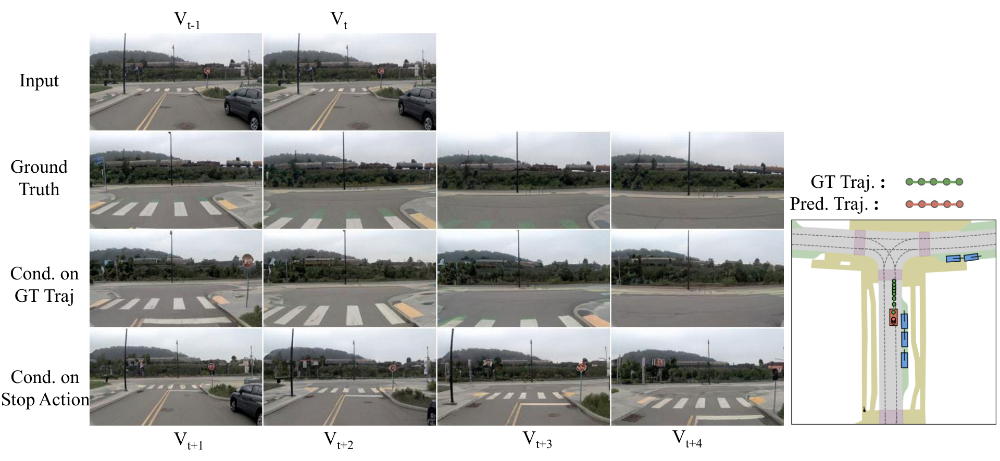
Original action-conditioned simulation figure, placed with the world-model mechanism discussion
Figure 2: VQ and ViT dual world modeling
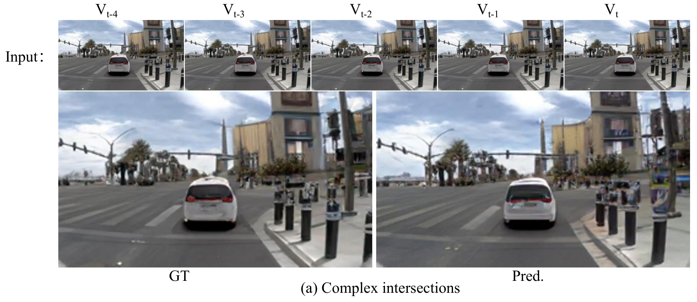
Figure 2: VQ and ViT dual world modeling
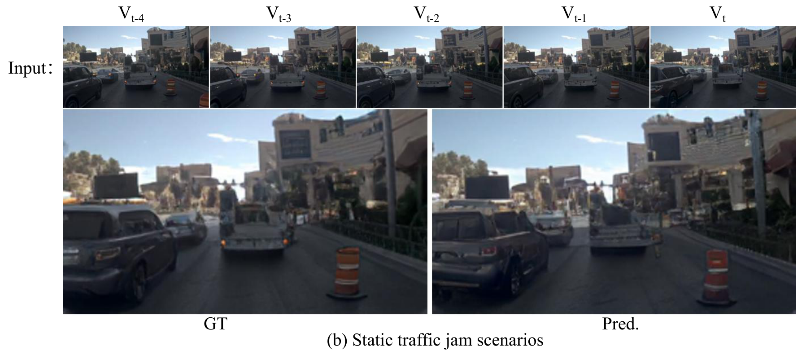
Figure 2: VQ and ViT dual world modeling
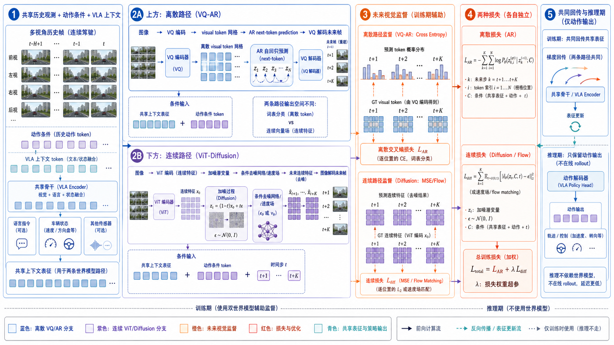
这张图用流程插画解释双世界模型路径:一条从视频上下文产生密集未来场景监督,一条由候选动作条件化生成未来观测,最后服务于规划选择;它是解释性生成图,不是论文实验图。
Contrasts AR current-frame token prediction with ViT future-frame flow matching.
flowchart TB A[VQ image tokens] --> B[AR world model] C[Context before current image] --> B B --> D[Current frame token loss] E[ViT visual features] --> F[Flow world model] G[Action features] --> F H[Future frame latent] --> F F --> I[Future image flow loss] D --> J[Dense self supervision] I --> J
flowchart TB
A[VQ image tokens] --> B[AR world model]
C[Context before current image] --> B
B --> D[Current frame token loss]
E[ViT visual features] --> F[Flow world model]
G[Action features] --> F
H[Future frame latent] --> F
F --> I[Future image flow loss]
D --> J[Dense self supervision]
I --> J
核心机制:让 VLM 以自回归方式生成当前图像 V_t 的所有 visual token (v_1, ..., v_N),以前序上下文 S_{<V_t} 为条件:
(其中 L_WA = L_WM-AR;记号改成上标是为了飞书公式稳定渲染)
联合优化:
(L_tot = L_Total,L_act = L_Action,L_WA = L_WM-AR)
推理时:完全跳过 visual token 的自回归 sample,直接跳到动作生成,零额外开销。只在可视化需要时才真的采样 visual token 并经 MoVQGAN decode 回图像 Î_t。
代码里的关键发现(Phase 3):
--apply_loss_on_only_vision True 在所有 Stage 1+2 脚本都传vision_loss_weight = 1.0(configs/moe_fast_video_pretrain.json:34)vision_loss_weight = 0.5(configs/moe_fast_video.json:34)为什么是当前帧(V_t)而不是未来帧(V_{t+1})?
答案藏在序列构造本身 —— V_t 在 S_t 里自然出现在 A_{t-1} 之后、A_t 之前,模型天然需要"先生成当前图像、再生成当前动作"(causal mask 下)。让它预测当前帧相当于复用 VLM 的 next-token 结构,不需要改架构。若改为预测 V_{t+1},则需要重新设计条件注入逻辑。此外,VQ 离散化引入了硬信息瓶颈(32768 个码本条目),使当前帧预测已经不平凡,模型无法"复制输入"作弊。
ViT backbone 没有离散 visual 词表,next-token prediction 不再自然。作者改用 latent diffusion(代码实为 flow matching,见下):
I_{t+1} 得到 latent z_{t+1}k 是随机 timestepF_V 和 F_A 为条件,预测噪声残差:(其中 L_WD = L_WM-Diff,z = 加噪后 latent z_tk;这里把 latent 下标拆出来避免一条 equation 多下标劈碎)
联合优化:
为什么 ViT 必须预测未来帧(I_{t+1})?
作者在 §3.2 L56-L57 说得很清楚:"since the model is conditioned on all present features simultaneously, predicting the future is necessary to learn predictive dynamics rather than simply performing a reconstruction task."
翻译:如果预测的是当前帧,F_V 本身就是当前帧的编码,denoiser 可以通过简单 skip connection 复制条件达成重建,损失变 trivial。必须预测下一帧才会强迫模型学 F_A 与场景演化的因果耦合。
推理时:和 AR WM 一样彻底跳过 denoising,flow matching 只用于训练时提供梯度。
| 维度 | AR World Model(VQ) | Diffusion/Flow WM(ViT) |
|---|---|---|
| 预测目标 | 当前帧 V_t 的 visual token 序列 |
未来帧 I_{t+1} 的 VAE latent |
| 条件来源 | 序列 S_{<V_t} 内的所有前序 token |
VLM 最终层特征 F_V + F_A |
| 损失类型 | Cross-Entropy(离散) | 代码实为 Flow Matching MSE(论文写 DDPM 风格是简化) |
| 为何这么选 | VQ 离散化自带信息瓶颈 + 序列顺序已经自然 | ViT 连续特征无瓶颈,必须预测未来才有非 trivial 学习 |
| 超参 | 平衡系数 α(代码默 10.0,Stage 2 override 1.0) |
平衡系数 β(Stage 1=1.0,Stage 2=0.5) |
| 推理时 | 跳过 visual token 生成 | 跳过 denoising |
| 可视化路径 | 采样 visual token → MoVQGAN decode | 从噪声反扩散(10 步)→ VAE decode |
作者借鉴 pi0 / pi0.5 思路:一个 8B 主 VLA Expert + 一个 500M 轻量 Action Expert(AE),两者并行处理 token,在每一层的 attention 中融合,而非 serial。融合机制是本文的命名:Joint Attention。
Joint Attention 机制(见图 3):
Figure 3: Joint Attention QKV concat and split
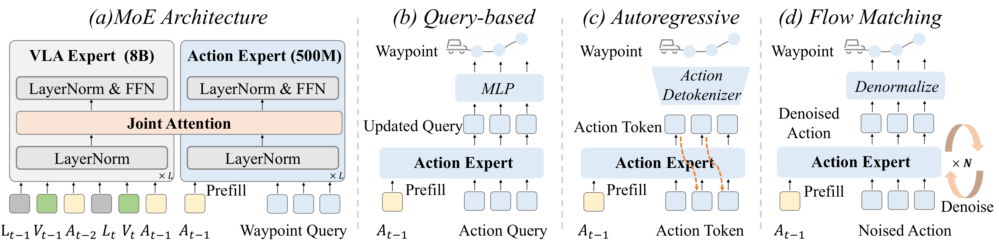
Figure 3: Joint Attention QKV concat and split
拼接后的 key 集合上统一 softmax,使两个 expert 在同一次 attention 中双向交换信息,再把输出拆回各自分支。
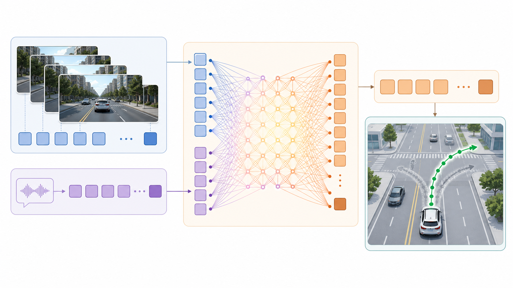
这张图用 token 与 attention mesh 表达 VLA Expert 和 Action Expert 的双向交互,帮助区分 Joint Attention 与单向 cross-attention;它是解释性生成图,不代表论文原图。
Shows why joint attention differs from one-way cross attention.
flowchart LR A[VLA expert] --> B[Q VLA K VLA V VLA] C[Action expert] --> D[Q AE K AE V AE] B --> E[Concatenate Q K V] D --> E E --> F[Joint attention] F --> G[Output for VLA] F --> H[Output for AE] G --> A H --> C
flowchart LR
A[VLA expert] --> B[Q VLA K VLA V VLA]
C[Action expert] --> D[Q AE K AE V AE]
B --> E[Concatenate Q K V]
D --> E
E --> F[Joint attention]
F --> G[Output for VLA]
F --> H[Output for AE]
G --> A
H --> C
Q, K, V are each concatenated from the VLA-expert branch and the action-expert branch along the token dimension.
(其中上标 V 代表 VLA Expert,A 代表 Action Expert;拆成 3 个 inline equation 避免单式多下标)
为什么叫 joint 而不是 cross? Cross-attention 是 Q 来自 expert A、K/V 来自 expert B(单向);Joint Attention 是对称双向的 —— 在同一次 attention 里,Q_VLA 能看到 K_AE,Q_AE 也能看到 K_VLA。公开源码已能直接核对这一点：reference/Emu3/emu3/mllm/modeling_emu3.py:1785-1809 分别计算两路 Q/K/V，并沿序列维拼接；:1818-1825 使用显式 combined_attention_mask_4d 做一次 scaled dot-product attention；:1831-1848 再按 VLM/action 序列长度拆分并分别经过输出投影、残差和 MLP。另一个容易忽略的边界是：VLM Q/K 应用 RoPE，而 Action Q/K 保持未旋转。
推理效率关键:VLA Expert 只算一次并 cache,真正的 action decoding loop 只在 AE 里迭代,所以才能从 117.8ms 降到 74.3ms。
AE 的代码级关键参数(Phase 3):
action_config sub-block num_hidden_layers=2(只有 2 层!) / intermediate_size=2048(VLA 是 14336,7× 小)/ rope_theta=10000(VLA 是 1e6)Figure 8: Action decoder scaling reversal
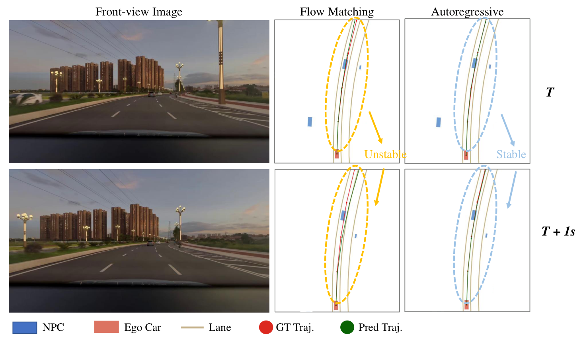
Figure 8: Action decoder scaling reversal
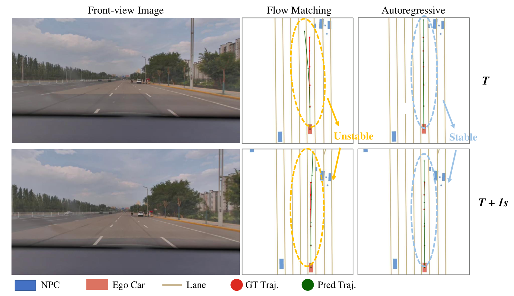
Figure 8: Action decoder scaling reversal
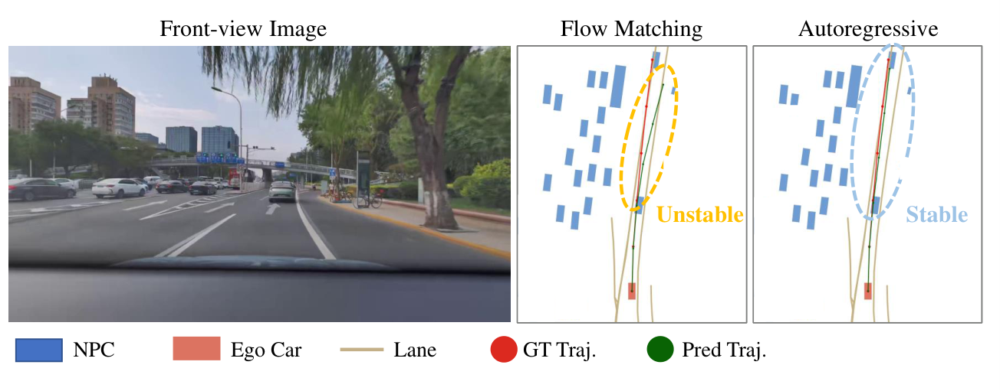
Figure 8: Action decoder scaling reversal
Query-based is stable at small scale; AR overtakes flow matching at large scale.
| Decoder | 表示 | 损失 | 输出路径 | 延迟(H200) |
|---|---|---|---|---|
| Query-based | 连续,固定 K 个 learnable action queries | L1 on (x, y) | Query → MLP → 连续 waypoints | 74.3ms 恒定 |
| Autoregressive | 离散,FAST token 逐个 sample | Cross-Entropy | token → FAST detokenizer → 连续 | 95ms(NAVSIM,5.6 token) / ~170ms(内部,17.8 token) |
| Flow Matching | 连续,向量场 v_phi ODE |
MSE on vector field | 噪声 → ODE solver 10 步 → 连续 | ~145ms 恒定 |
Query-based Anchor 变体(Phase 3 独家发现):
inference/vla/infer_navsim_query_based_with_anchor_PDMS_90.2.sh 揭示:VLA_ANCHOR_ENABLED=true 时用 256 queries + 8192 K-means 聚类 anchor(cluster_centers_8192.npy)Flow Matching 专家的数学核心:学 conditional vector field v_phi 把简单噪声分布"流"到真实 action 分布。训练时定义从高斯噪声 x0 到真值 action x1 的直线路径,优化 MSE 让 v_phi 对齐 x1 - x0。代码里 tau 从 Beta(1.5, 1.0) 采样(noise_schedulers.py:19,偏清洁侧),inference 10 步 ODE solver。CFG 默认 scale=2.0(flow_matching.py:66),论文都没写。
Figure 4: Two-stage training
Action loss + world-model dense loss
移除 WM loss,训练 MoE Action Expert
缓存 VLA 特征,由轻 expert 解码轨迹
Stage 1 uses world-model and action supervision; Stage 2 removes world-model loss and trains the action expert.
flowchart TB A[Stage 1 NuPlan or in house] --> B[6VA input] B --> C[VLA backbone] C --> D[Action loss plus world model loss] D --> E[World aware representation] E --> F[Stage 2 NAVSIM] F --> G[2VA input] G --> H[VLA plus action expert] H --> I[Action loss only] I --> J[Realtime trajectory output]
flowchart TB
A[Stage 1 NuPlan or in house] --> B[6VA input]
B --> C[VLA backbone]
C --> D[Action loss plus world model loss]
D --> E[World aware representation]
E --> F[Stage 2 NAVSIM]
F --> G[2VA input]
G --> H[VLA plus action expert]
H --> I[Action loss only]
I --> J[Realtime trajectory output]
| 阶段 | 输入序列 | 组件 | 损失 | 目的 |
|---|---|---|---|---|
| Stage 1 Pretrain | 6VA(6 步历史) |
VLA backbone 独立 | L_Action + L_WM(α=10, β=1.0) |
学丰富 world 表征 |
| Stage 2 Finetune | 2VA(2 步历史) |
VLA backbone + Action Expert | 仅 L_Action(来自 AE 部分,α=1.0;backbone 不 freeze) |
专注动作精度 + 实时效率 |
关键坑:论文 §5.2 L33 明确说 Stage 2 VLA backbone NOT freeze —— 它继续通过 Joint Attention 的梯度与 AE 一起训练。但 WM loss 在 Stage 2 被移除。这意味着:
前提:
P_theta(v_i | S, previous v) 是 VLM 在位置 i 输出的 softmax over 32768 码本v_i^* 来自 MoVQGAN 对真实图像 I_t 量化后的 token推导:
L_WM-AR,和 Action 侧的 CE 损失结构完全同构,只是 vocab 不同(visual 32768 vs action FAST 2048)关键观察(论文未强调):由于 V_t 在序列中紧跟 A_{t-1} 之前,v_{<i}^* 是前 i-1 个 ground truth visual token (teacher forcing),和 action autoregressive 训练完全对称。推理时跳过这部分,相当于把整段 V_t 视为"空位"直接进 action token 预测 —— 这就是为什么 WM 零推理开销。
论文 Eq.4 的 DDPM 风格写法(前提是 DDPM):
z_k = sqrt(ᾱ_k) · z_0 + sqrt(1 - ᾱ_k) · ε,eps ~ N(0,I)L_simple = E[||ε − ε̂(z_k, k, c)||²]c = (F_V, F_A),z_0 = z_{t+1} 即得论文 Eq.4代码实际 Flow Matching(Lipman 2023):
x_tau = (1 - tau) * x0 + tau * x1,其中 x0,x1 = z_next(目标)u(x_τ, τ) = x_1 − x_0L_FM = E[||u(x_τ, τ) − v_θ(x_τ, τ, c)||²]两者关系:Flow Matching 在 τ ∈ [0, 1] 上是广义的 ODE 形式,DDPM 是 SDE 特例。数学上 Flow Matching 可涵盖 DDPM(通过特定选择 x_τ 路径),但 velocity target 与 noise prediction target 不等价。
结论:论文为表达简洁用 DDPM 记法,代码为训练稳定/样本效率选 flow matching。复现时严格对齐代码版本,用 DDPM 实现会掉分。
前提:标准多头 attention Attn(Q, K, V) = softmax(QK^T / sqrt(d)) V
Claim:令 Q = [Q_V; Q_A],K = [K_V; K_A],V = [V_V; V_A],则 Joint Attention 的输出 O = softmax(QK^T / sqrt(d)) V,拆回两部分 O_V = O[:n_V],O_A = O[n_V:] 后:
也就是说,O_V 的 softmax 是在 V 和 A 拼接后的 key 集合上做归一化,所以 V/A 的权重不是独立的 —— 这是 joint 比"先 self-attention 再 cross-attention"更紧耦合的根本原因。
推导失败标记:如果 QVK_A 的量级显著大于 QVK_V(例如 AE 的 hidden_dim 和 VLA 不同导致 key 尺度不一致),O_V 可能过度关注 AE tokens 而忽略自身上下文。论文对此未提任何 scale normalization 策略 —— 这是 v3 发现的潜在坑。Phase 3 代码验证:moe_experts.py:90-91 有 q_norm / k_norm LayerNorm,但VLA 和 AE 的 hidden_dim 相同(都 4096),所以 key 尺度问题不存在;真正的隐患在于 rope_theta 不同(1e6 vs 10000)导致的位置编码尺度差。
| 类型 | 假设 | 工程风险 |
|---|---|---|
| 显式 | 未来帧与当前帧在 visual 分布上相似 | 雨天/夜间突变场景失效 |
| 显式 | 70M 帧数据 "curated to be balanced" | 高依赖 in-house dataset 质量 |
| 隐含 | Stage 1 预训练 8k steps(NAVSIM)足够 | 步数太少,LAW ICLR 2025 版本用 20k+ steps |
| 隐含 | FAST tokenizer 量化误差小于 action 精度要求 | Table 4 显示 AR decoder 在小数据上 PDMS 比 query-based 低 3.1 分,主因是量化误差 |
| 隐含 | MoE 训练 AE 能有效"读"到 VLA 表征 | AE 和 VLA 的 rope_theta 差 100 倍,位置编码可能不协调 |
| 隐含 | AR inference 时 GT action 不会泄露 | Issue #5 指出 datasets.py:1076-1083 始终拼 <boa>action<eoa> 进 vlm_input_ids,若推理时未手动切除会泄露 → 论文 AR PDMS 数字可能虚高 |
| 主张 | 对应实验 | 结论强度 |
|---|---|---|
| C1 supervision deficit 存在 | Table 5 NuPlan→NAVSIM(baseline 负迁移) | 强 |
| C2 两条 WM 路径都 work | Table 3 + Table 4 同时有 VQ / ViT | 强 |
| C3 跨域迁移翻转 | Table 5 | 强 |
| C4 data scaling law 放大 | Table 3(三 scale) | 中 — 仅 3 点,严格讲不足以声称 power-law;700k scale 非单调 |
| C5 63.1% latency | §5.3 Ablation Latency | 强 |
| C6 decoder scaling 反转 | Table 4 | 中 — AR vs Flow 差距 1-2 分,无 seed 方差 |
Figure 7: Data scaling: ADE vs training frames
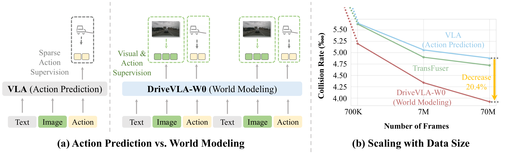
Figure 7: Data scaling: ADE vs training frames
Table 3 visualized: action-only saturation and world-model gains at 70M frames.
Table 1 NAVSIM v1 SOTA(单前视摄像头刷爆多视角 + LiDAR 基线)
| Method | Sensors | PDMS |
|---|---|---|
| UniAD | 6× Cam | 83.4 |
| TransFuser | 3× Cam + L | 84.0 |
| LAW | 1× Cam | 84.6 |
| DiffusionDrive | 3× Cam + L | 88.1 |
| WoTE | 3× Cam + L | 88.3 |
| DriveVLA-W0* | 1× Cam | 88.4 |
| AutoVLA | 3× Cam | 89.1 |
| ReCogDrive | 3× Cam | 89.6 |
| DriveVLA-W0 (anchor) | 1× Cam | 90.2 |
| DriveVLA-W0 (BoN) | 1× Cam | 93.0 |
Table 3 In-house Scaling(关键)
| Model | 70k ADE | 700k ADE | 70M ADE |
|---|---|---|---|
| VLA (VQ) Baseline | 2.8520 | 1.5424 | 1.4829 |
| + WM (Ours) | 2.7482 | 1.5985 | 1.0563 (+28.8%) |
| VLA (ViT) Baseline | 3.1524 | 1.4202 | 1.1051 |
| + WM (Ours) | 2.5268 | 1.3436 | 1.0640 (+3.7%) |
| 消融 | 对照 | 结果 |
|---|---|---|
| Vision-Only vs Vision-Action | 6V / 6VA | 6VA 85.6 vs 6V 84.1(+1.5) — 动作条件化让 WM 学因果动态 |
| 序列长度 | VA / 2VA / 6VA | 6VA 85.6 vs VA 83.3(+2.3) |
| Latency | baseline vs + MoE Expert | 117.8ms → 74.3ms, PDMS 85.6 → 88.4 |
| FID × PDMS | 2VA / 6VA | 正相关 — 图像生成质量 ≈ 规划性能代理 |
Figure 11: FID-PDMS relation and latency Shows the image-generation quality proxy and MoE action expert latency gain.
| Time Interval | 1s / 4s | 1s 85.6 > 4s 84.3 |
| 组件 | 新颖性 | 证据 |
|---|---|---|
| VLA interleaved sequence | (c) 直接复用 | UniVLA / InterleaveVLA |
| Emu3 / Qwen2.5-VL backbone | (c) 直接复用 | 原装 |
| FAST tokenizer | (c) 直接复用 | Pertsch 2025 |
AR WM on current frame V_t |
(b) 已有技术改进 | UniVLA 已做 AR WM,本文设置 current-frame 目标 |
Flow Matching WM on future frame I_{t+1} |
(a) 本文首次在 VLA+AD 组合 | Epona / GAIA-1 是"WM 即生成器",本文是"WM 即辅助监督" |
| "WM 训练时用,推理时丢" 的正则化范式 | (a) 核心贡献 | 和 LAW(latent WM 推理时也用)完全不同 |
| MoE Action Expert Joint Attention | (b) 改进 | pi0 / pi0.5 已有双 expert;Joint Attention 对称实现 + 2 层 AE + 7× 小 FFN 是本文命名 |
| 三种 action decoder 并列对比 | (a) 系统实证新 | 此前没人在 70M 帧尺度对比 query / AR / flow |
| Data scaling 实证(70k / 700k / 70M) | (a) 规模最大 | 70M 帧首次公开此量级 VLA scaling |
| NuPlan→NAVSIM 负迁移翻转证据 | (a) 首次量化 | Table 5 是本文最"干净"证据 |
| 256 queries + 8192 anchor(代码) | (a) 未公开 | 论文未提,Issue #19 才暴露 |
| Flow Matching Beta(1.5, 1.0) + CFG scale=2 + adaLN(代码) | (c) 直接复用 | π0 / DiT 已有,但论文没讲,用户得从代码自己挖 |
真正的创新点:(a) 类里最硬核的是 "WM 训练时用、推理时丢" + "data scaling 放大" 的实证组合。单看每个元素(WM / MoE / decoder 对比)都是已知零件,组合到 70M 帧规模上的实证是不可替代的贡献。
手工采样 References Top-8:
| # | 类型 | 论文 | 与本论文关系 |
|---|---|---|---|
| 1 | Ref | Kaplan et al. 2020 Scaling Laws | §1 L4,scaling 叙事起点 |
| 2 | Ref | Emu3(Wang 2024b) | VQ 路径 backbone |
| 3 | Ref | Qwen2.5-VL(Bai 2025) | ViT 路径 backbone |
| 4 | Ref | LAW(Li 2024a ICLR 2025) | 同组前作 latent WM,本文 image-space 升级 |
| 5 | Ref | FAST tokenizer(Pertsch 2025) | 动作 tokenization 核心 |
| 6 | Ref | NAVSIM(Dauner 2024) | 主 benchmark |
| 7 | Ref | pi0 / pi0.5(Black 2025 / Intelligence 2025) | MoE Action Expert 灵感 |
| 8 | Ref | Stable Diffusion(Rombach 2021) | Diffusion WM 基础 |
Citations Top-8(2025-11~2026-05):
| # | 论文 | 关系 |
|---|---|---|
| 1 | ORION v2(ICCV 2025) | 引用"W0 超大数据时 AR 比 diffusion/flow 更好" |
| 2 | DrivingGPT | 被列"前驱",W0 将 WM+VLA 扩到 70M |
| 3 | FSDrive(NeurIPS 2025 Spotlight) | 同期 VLA+spatio-temporal CoT |
| 4 | ReCogDrive(ICLR 2026) | NAVSIM 89.6 竞品 |
| 5 | Epona(ICCV 2025) | AR+Diffusion 组合 |
| 6 | Alpamayo-R1 | 2026-04 ReasoningVLA |
| 7 | DriveDPO(NeurIPS 2025) | NAVSIM 90.0 |
| 8 | DriveWorld-VLA(2026) | 小米/北交指出 W0 缺因果推理 |
Figure 10: Field positioning Places DriveVLA-W0 among BEV planners, VLA methods, world-model assisted training, and inference-time world models.
一致方向:数据驱动 > 结构先验;WM 作辅助目标 > WM 作推理模块;large backbone 对 driving 有正收益。
分歧方向:
| 关联类型 | 论文 | 飞书 URL | 关系 |
|---|---|---|---|
| 直接前序 VLA SFT baseline | OpenDriveVLA(AAAI 2026) | https://mi.feishu.cn/wiki/GYTtwIqC4ikBANk2JUPcQDBunkf" target="_blank" rel="noopener noreferrer">OpenDriveVLA 深度解析 | VLA 纯 SFT 版本,本文在其基础上加 WM 正则 |
| 同范式 WM+Planning 统一 | DrivingGPT | https://mi.feishu.cn/wiki/EDU8we7SRiMESUkuiAQcIeu8nWd" target="_blank" rel="noopener noreferrer">DrivingGPT 深度解析 | 飞书明说"直接触发 DriveVLA-W0" |
| 同范式 VLA+视觉 CoT | FSDrive(NeurIPS 2025 Spotlight) | https://mi.feishu.cn/wiki/GXFLwl6ECiw1POkKcdrcQWOwnrg" target="_blank" rel="noopener noreferrer">FSDrive 深度解析 | 同 VLA 扮演 WM + inverse dynamics |
| AR+Diffusion 组合 WM | Epona(ICCV 2025) | https://mi.feishu.cn/wiki/GAM3wW4KmipXDKkbGORc98Amnvf" target="_blank" rel="noopener noreferrer">Epona 深度解析 | 1.2B DiT + Flow Matching |
| VAE 路线对比者 | ORION(ICCV 2025) | https://mi.feishu.cn/wiki/DCeZwLB90iCcQOkn1PAcK7OInsg" target="_blank" rel="noopener noreferrer">ORION 深度解析 v2 | 飞书原话"W0 超大数据时 AR 比 diffusion/flow 更好" |
| VLA RL+轨迹评估 | ReCogDrive(ICLR 2026) | https://mi.feishu.cn/wiki/UuAywnDjNi2KYEk3esbcb2RRn8e" target="_blank" rel="noopener noreferrer">ReCogDrive 深度解析 v2 | NAVSIM 89.6 竞品 |
| DPO 轨迹对齐 | DriveDPO(NeurIPS 2025) | https://mi.feishu.cn/wiki/ODWnwXZQ1iC0FCk8gVdcjPmWn1e" target="_blank" rel="noopener noreferrer">DriveDPO 深度解析 | NAVSIM 90.0 |
| BEV WM | WoTE(ICCV 2025) | https://mi.feishu.cn/wiki/OzCXw3gzTi86IzkucGpc2hNMnMe" target="_blank" rel="noopener noreferrer">WoTE 深度解析 | BEV WM + online eval |
| Proposal-centric | iPad(NeurIPS 2025) | https://mi.feishu.cn/wiki/KGlAw7xZgiRyBYkVJJ8cZzYSnxf" target="_blank" rel="noopener noreferrer">iPad 深度解析 | 迭代 proposal |
| 论文 | 表示空间 | WM 使用方式 | 推理时 WM | NAVSIM PDMS |
|---|---|---|---|---|
| OpenDriveVLA(2025-03) | 3D 空间感知 | 无 WM,纯 SFT | — | 83-86 |
| LAW(2024-06) | Latent | 预测 latent | 在线 | 84.6 |
| WoTE(2025-05) | BEV | BEV WM trajectory eval | 在线 | 88.3 |
| DrivingGPT(2024-12) | VQ | AR 多模态预测 | 在线 | — |
| FSDrive(2025-05) | VQ visual token | spatio-temporal CoT | 中间步骤 | 85.1 |
| Epona(2025-05) | latent+DiT | AR+Flow 组合 | 在线 | — |
| ORION(2025-03) | VAE latent | VAE 重建+planning | 在线 | — |
| ReCogDrive(2025-06) | 连续特征 | Diffusion+RL 规划 | 在线 | 89.6 |
| DriveDPO(2025-09) | 连续特征 | 无 WM,DPO | — | 90.0 |
| DriveVLA-W0(2025-10) | VQ AR / ViT Flow 双路径 | 仅训练时用,推理时丢 | 完全丢弃 | 88.4 / 90.2 / 93.0 |
独特定位总结:本文是唯一把 WM 定位为"训练时正则化器、推理时零开销"的 VLA 工作。
| 维度 | OpenDriveVLA | DriveVLA-W0 |
|---|---|---|
| 核心监督 | 纯 SFT | SFT + dense WM |
| 表示 | 3D 空间感知 token | VQ / ViT 双路径 |
| 训练数据 | nuScenes 级 | 70M 帧 in-house |
| 推理 decoder | 标准 AR | Query / AR / Flow 三种对比 |
| PDMS | ~86 | 88.4 / 90.2 / 93.0 |
作者:"world modeling amplifies the data scaling law"(§1 L25)。
反驳:
反驳:
反驳:
作者:AR 在大规模数据下最优,flow "sample-inefficient"。
反驳:
Phase 2 微卷的大白博客尖锐批评:引望(华为子公司)必有多摄像头+LiDAR 生产系统,单前视更像学术方案验证。
反驳:
| 通道 | 平台 | 试验次数 | 命中数 | 核心价值 |
|---|---|---|---|---|
| A 知乎 | zhihu.com/search | 1 主查 + 3 正文爬取 | 20+ 条 / 5+ 篇 >10 赞深度 | 主力,贡献 3 篇核心深读 |
| B 微信 + CSDN | weixin.sogou.com + so.csdn.net | 2 次 | CSDN 10+ / 微信 8+(去重 4 独立账号) | 工业界视角 |
| C B 站 + 英文 | bilibili.com + twitter + alphaXiv | 4 次 | B 站 1 视频 1062 播放 / Twitter 被墙 ERR → alphaXiv 降级 | alphaXiv 提供唯一高质量英文概览 |
基本信息:知乎专栏 https://zhuanlan.zhihu.com/p/1986398591003161238" target="_blank" rel="noopener noreferrer">zhuanlan.zhihu.com/p/1986398591003161238,2025-12-22,85 赞 2 评论 252 收藏 — 本次搜索热度最高解读。
独有技术见解(≥3 条):
批评与质疑(≥2 条):
工程实现补充:
基本信息:知乎专栏 https://zhuanlan.zhihu.com/p/1962678456325248819" target="_blank" rel="noopener noreferrer">zhuanlan.zhihu.com/p/1962678456325248819,2025-10-18(发布 4 天后首波解读,时效性最早),31 赞 3 评论 73 收藏。
独有技术见解:
批评与质疑:
工程实现补充:
基本信息:知乎专栏 https://zhuanlan.zhihu.com/p/1966831401258185534" target="_blank" rel="noopener noreferrer">zhuanlan.zhihu.com/p/1966831401258185534,2025-10-31,14 赞(数字不高但作者权威度 = 全站 Top 自驾作者)。
独有技术见解:
批评与质疑:
工程实现补充:
| # | 冲突点 | 博客 A 观点 | 博客 B 观点 | 谁更可信 |
|---|---|---|---|---|
| 1 | AR vs Flow 大规模反超 | 微卷的大白:质疑 Flow underfit | 黄浴/擎天柱:信论文数据 | B 基于论文数据更可信,但 A 的"Flow 实现过简"有理 — DiffusionDrive/DiffVLA 有 trajectory 约束对比 |
| 2 | 真 WM 融合 还是 松耦合辅助 | 擎天柱:关键融合节点 | 微卷的大白:辅助目标非真融合 | B 更精准 — DriveVLA-W0 推理时直接跳过 WM,不是真循环推演 |
| 3 | "监督不足"是否核心瓶颈 | alphaXiv/黄浴:是 | 擎天柱/谭日成:真正瓶颈是对齐 | 两者都对但 scope 不同 — scaling 维度 A 对,工业落地维度 B 对 |
| 4 | 单前视摄像头评价 | 微卷的大白:方案验证 | 黄浴/擎天柱:架构特色 | A 更尖锐 — 引望必有多传感器,单 V 更多是学术 apples-to-apples |
| # | 标题 | 平台 | 作者 | 日期 | 热度 | 一句话定位 |
|---|---|---|---|---|---|---|
| 1 | Awesome VLA-WM | 知乎 | 王东伟 | 2025-12 | 2 赞 | VLA×WM 工作列表合集 |
| 2 | 李飞飞空间智能首秀(谭日成回答) | 知乎 | 谭日成 | 2025-11 | 7 赞 | "supervision deficit"非唯一瓶颈 |
| 3 | 2026 具身突破(CyberSoma) | 知乎 | CyberSoma | 2025-12 | 14 赞 | 列为关键突破候选 |
| 4 | DriveVLA-W0 改写数据扩展法则 | 知乎 | wanhjh1223 | 2026-03 | 1 赞 | 后期总结帖 |
| 5 | MMatx 版解读 | 知乎 | MMatx | 2026-02 | 0 赞 | 三贡献拆解 |
| 6 | 2025 DriveVLA-W0 Emu3 | 知乎 | 么么牛 | 2026-04 | 0 赞 | 强调华为引望背景 |
| 7 | 智能驾驶技术解析(四)-VLA | 知乎 | 小蝎子 | 2025-11 | 15 赞 | VLA 量产三方向总览 |
| 8 | 自动驾驶 VLA 的 MoE 支柱 | 知乎 | 汽车电子与软件 | 2025-11 | 2 赞 | 专讲 MoE 以 W0 为案例 |
| 9 | 华为刷新小米 VLA 纪录 | 知乎 | 佐思汽车研究 | 2026-03 | 0 赞 | 工业视角 |
| 10 | DriveVLA-W0 出发探讨 WM 放大 VLA scaling | B 站视频 | 自动驾驶之心 | 2025-12 | 1062 播放 | 唯一有效中文视频 |
| 11 | 70M 数据解锁 VLA Scaling | 微信 | 极智视界 | 2026-03 | — | 公众号级解读 |
| 12 | VLA × WM 路线之争 | 微信 | CarRobo Vision | 2026-04 | — | 华为方案 |
| 13 | CVPR 2026 VLA+WM 新范式 | 微信 | CarRobo Vision | 2026-04 | — | 和博世 ExploreVLA 对比 |
| 14 | 清华 LaST-VLA-8B 超越 W0 86.1 | 微信 | 赛博雷达 | 2026-04 | — | LaST-VLA 87.1 > W0 86.1 |
| 15 | DriveVLA-W0 Boosts AD | alphaXiv | AI overview | 2025-10+ | — | 唯一高质量英文技术总结 |
| 16 | 长安 DreamerAD | 微信 | 科工力量 | 2026-03 | — | W0 列为先驱 |
| 17 | 超越 W0! DriveLaW | 自动驾驶之心 | - | 2026+ | — | 华科+小米后继 |
| 18 | DriveWorld-VLA 小米北交 | 自动驾驶之心 | - | 2026-02 | — | 小米 WM-VLA 超 W0 |
Figure 12: Paper vs Code gap map Highlights reproduction-critical mechanisms not disclosed in the paper text.
flowchart TB A[Paper method] --> B[MoE action expert] A --> C[Flow matching decoder] A --> D[Joint attention] B --> E[Code adds adaLN modulation] C --> F[Code uses Beta time sampling] C --> G[Code has CFG path] D --> H[Vendored attention mask needs audit] A --> I[Issue 5 GT action leak risk] E --> J[Reproduction critical gaps] F --> J G --> J H --> J I --> J
flowchart TB
A[Paper method] --> B[MoE action expert]
A --> C[Flow matching decoder]
A --> D[Joint attention]
B --> E[Code adds adaLN modulation]
C --> F[Code uses Beta time sampling]
C --> G[Code has CFG path]
D --> H[Vendored attention mask needs audit]
A --> I[Issue 5 GT action leak risk]
E --> J[Reproduction critical gaps]
F --> J
G --> J
H --> J
I --> J
限于篇幅,下表列出最关键的 12 条(完整 25 条见 phase3_code.md 本地文件):
| # | 模块 | 代码位置(file:line) | 状态 | 关键差异 |
|---|---|---|---|---|
| 2 | MoE Action Expert | configs/moe_fast_video.json:35-55 |
✅ | 仅 2 层 transformer + FFN 2048(VLA 是 14336)+ rope_theta 10000(VLA 1e6) — 论文仅说"small MoE" |
| 3 | Eq.1 L_Action α weight | utils/train_ar.py:103 default=10.0 vs train_navsim_ar.sh:69 override=1.0 |
⚠ | Stage 1 α=10, Stage 2 α=1.0 未披露 |
| 4 | Eq.2 L_WM-AR β weight | moe_fast_video_pretrain.json:34 β=1.0 vs moe_fast_video.json:34 β=0.5 |
✅ | β 调度 Stage 1→2:1.0→0.5 未披露 |
| 5 | Eq.4 L_WM-Diff | flow_matching.py:39-63 target=(z₁-x) |
⚠ | 代码是 Flow Matching 不是 DDPM — 论文 Eq.4 简化表述 |
| 6 | Joint Attention mask | reference/Emu3/emu3/mllm/modeling_emu3.py:1726-1923 |
✓ | 公开代码可见双路 Q/K/V 拼接、combined_attention_mask_4d、拆分输出和缓存 VLM K/V 的推理路径 |
| 7 | adaLN modulation | moe_experts.py:185-188 |
❌ | DiT 风格 6× modulation 每 block,论文完全未写 |
| 8 | CFG in Diffusion WM | moe_experts.py:314-322 forward_with_cfg |
❌ | classifier-free guidance,class_dropout_prob=0.1,论文未写 |
| 9 | Flow Matching Beta(1.5, 1.0) τ sampling | noise_schedulers.py:19 Beta(1.5, 1.0) |
❌ | 偏 τ→0 清洁侧,论文未写,借鉴 π0 |
| 10 | FAST tokenizer 关键参数 | configs/fast/processor_config.json |
✅ | scale=10, vocab_size=2048, min_token=-354 未披露但 Issue #1 47 评论围绕这个 |
| 12 | Anchor Q-Former 256 queries + 8192 clusters | cluster_centers_8192.npy + Issue #19 |
❌ | 论文说 Query-based 用 learnable queries,实际 anchor 版本用 256 queries + 8192 K-means clusters |
| 16 | null_prompt_prob 0.15 | 所有训练脚本 | ❌ | 15% 文本 prompt dropout(CFG 式),论文未写 |
| 20 | AR inference GT action leak 嫌疑 | utils/datasets.py:1076-1083 |
❌ | Emu3DrivingVAVA_AR_Dataset 始终拼 <boa>action<eoa> 进 vlm_input_ids,Issue #5 指出可能泄漏至 AR 推理,作者未解释 |
| 21 | pre_action 3 步历史无 dropout | --use_previous_actions True + pre_action_frames=3 |
❌ | 3 步过去 ego 始终可见,强 kinematic prior,与 ReCogDrive LEARNINGS 75% dropout 警告共振 |
| # | 差异 | 回填位置 | 状态 |
|---|---|---|---|
| 7 adaLN modulation | Phase 1 §2.4.1 MoE 架构小节末 callout | ✓ 已回填 | |
| 9 Beta(1.5, 1.0) τ | Phase 1 §2.4.2 Flow Matching 段末 | ✓ 已回填 | |
| 12 Anchor 256+8192 | Phase 1 §2.4.2 Query-based Anchor 变体独立 callout | ✓ 已回填 | |
| 21 pre_action 3 步无 dropout | Phase 1 §2.4.2 开头 callout | ✓ 已回填 | |
| 5 Flow Matching vs DDPM | Phase 1 §2.3.2 callout | ✓ 已回填 | |
| 20 GT action leak 嫌疑 | Phase 1 §3.2 假设审查最后一行 | ✓ 已回填 |
| # | 标题 | Severity | 关键发现 |
|---|---|---|---|
| #5 (closed, 未解释) | GT actions are used when inferencing | Critical | inference_action_navsim_ar_vava.py:79 存 8 future GT actions 到 vlm_input_ids;3 👍 作者关闭无回复 — AR PDMS 可能虚高 |
| #19 (open) | Emu3_Query_based 权重 size mismatch | High | [1,256,1024] vs [1,8,1024];必须 VLA_ANCHOR_ENABLED=true 才能跑 PDMS 90.2 |
| #8 (open) | normalize_pi0 模块缺失 |
Medium | import error,公开代码缺 |
| #1 (open) | 怎么 tokenize trajectory | 47 comments | FAST tokenizer 社区调试大合集 |
| #16 (open) | Qwen-VLA reproduction PDMS 69 vs 报 85.3(-16) | Critical | 无作者回复;怀疑 path/config 错 |
| #15 (open) | Flow Matching 复现 -2.3 PDMS | High | 无作者回复,怀疑 norm_stats/anchor/cfg_scale |
| #17/18 (open) | NuPlan 预处理文件缺失 | Medium | 作者未释出完整预处理 |
| #7 (closed) | "unfair comparison" 训练 validation 拆分质疑 | — | 脚本确实用 trainval_pre_1s.pkl(trainval 合并) |
commit timeline 作 PR 代理:2026-01-07 支持 flow matching test + anchor 工作流,初次 release 3 个月后才补全 — 反映代码工程化不足。
conda create -n drivevla python=3.10 && conda activate drivevla
pip install torch==2.4.0 torchvision==0.19.0 --index-url https://download.pytorch.org/whl/cu124
pip install -r requirements.txt # transformers==4.44.0, flash-attn==2.5.7
pip install deepspeed scipy tensorboard==2.14.0
export HF_ENDPOINT=https://hf-mirror.com# 下载预处理 pickle(强烈建议,别自己跑 nuplan pretrain)
huggingface-cli download liyingyan/DriveVLA-W0 \
navsim_emu_vla_256_144_test_pre_1s.pkl \
navsim_emu_vla_256_144_trainval_pre_1s.pkl \
train_vq_codes.zip test_vq_codes.zip
bash scripts/misc/download_emu3_pretrain.sh
# Anchor 变体需要 cluster_centers_8192.npy —— HF 上没,Issue #19 才暴露,找作者要# Stage 1 pretrain (3 node x 8 GPU, 48h;绝大多数用户直接跳过用 HF ckpt)
bash scripts/pretrain/train_nuplan_6va_multi_v0.2_worker.sh <master_ip>
# Stage 2 finetune(单机 8× L20 40GB,16h;挑一个变体)
bash scripts/scripts_train/train_navsim_ar.sh # AR decoder
bash scripts/scripts_train/train_navsim_flow_matching.sh # Flow(87.2 PDMS)
bash scripts/scripts_train/train_navsim_query_based.sh # Query+Anchor(90.2 PDMS)| 阶段 | 变体 | GPU 数 | per-dev bsz | max_pos_emb | max_steps | 预估时间 | 显存 |
|---|---|---|---|---|---|---|---|
| Stage 1 pretrain | nuplan 6VA 多节点 | L20-40GB × 8 × 3 节点 | 4 | 4000 | 8000 | ~48h | ~38 GB/GPU(ZeRO-3 offload) |
| Stage 2 finetune | AR-MoE | L20-40GB × 8 | 6 | 1500 | 10000 | ~16h | ~35 GB/GPU |
| Stage 2 finetune | Flow matching | L20-40GB × 8 | 12 | 1400 | 10000 | ~16h | ~32 GB/GPU |
| Stage 2 finetune | Query-based | L20-40GB × 8 | 12 | 1400 | 4000 | ~6h | ~32 GB/GPU |
| Inference | 所有变体 | 1× 24GB+ GPU | 1 | 1400 | — | <1h 12k scenes × 8 GPU | <16 GB |
README 只说"8×L20 ~16h" — 实际仅覆盖 Stage 2 单一变体,Stage 1 若从零训练需要 3× 资源。
| 组 | 参数 | 值 | 论文披露? |
|---|---|---|---|
| Optimizer | lr (Stage 1 / Stage 2) | 2e-4 / 5e-5(4× 差) | ❌ |
| Optimizer | warmup (Stage 1 / Stage 2) | 400 / 50 steps | ❌ |
| Optimizer | scheduler / weight_decay / adam | cosine+min_lr 1e-6 / 0.1 / (0.9, 0.95) eps=1e-6 | ❌ |
| Optimizer | max_grad_norm / precision | 5.0 / bf16+tf32 | ❌ |
| Loss | α L_Action(Stage 2) | 1.0(override,code default 10.0) | ❌ |
| Loss | β L_WM(Stage 1 / Stage 2) | 1.0 / 0.5 | ❌ |
| Loss | null_prompt_prob | 0.15(文本 CFG drop) | ❌ |
| Model | VLA FFN / AE FFN | 14336 / 2048(7× 小) | ❌ |
| Model | VLA rope_theta / AE rope_theta | 1e6 / 10000(100× 差) | ❌ |
| Model | AE num_hidden_layers | 2(仅 2 层) | ❌ |
| FAST | scale / vocab / min_token / DCT | 10 / 2048 / -354 / axis=1 norm=ortho | ❌ |
| Flow | τ 分布 / 阈值 / 推理步数 | Beta(1.5, 1.0) / 0.999 / 10 | ❌ |
| CFG | class_dropout_prob / infer cfg_scale | 0.1 / 2.0 | ❌ |
| Data | pre_action_frames / action_dim / action_hz | 3 frames 无 dropout / 3(x,y,yaw) / 2Hz | ⚠ 仅"prefill" |
| Query decoder | num_queries / num_anchors | 8 非 anchor / 256 anchor / 8192 K-means | ❌ |
inference_action_navsim_ar_vava.py — 修 Issue #5 先,确保 inference 样本不 pre-concat <boa>action<eoa>VLA_ANCHOR_ENABLED=true 必须设 才能跑公开的 88.4 / 90.2 Query-based ckpt(Issue #19)pi0_fast_video.json 文件缺失(Issue #18),换 configs/moe_fast_video.jsonEmu3_NuPlan_Pretrain_Cktps| 来源 | 检查点 | 本次发现 |
|---|---|---|
| DiffAD | config 默认 dropout 0.5 vs 最优 0.95 | ✅ 对应 null_prompt_prob=0.15 default 确为训练常用值,无"默认 vs 最优"分叉 |
| DiffAD | MotionAlignment 纯几何 warp 论文零字未提 | ⚠ 对应 pre_action 3 步历史无 dropout,论文仅 1 句带过 |
| Hydra-MDP++ | Perception aux 反而损害 planning | ⚠ 命中:VQ +WM 在 700k scale 出现非单调 -3.6%,可能同源 gradient conflict |
| ORION | 同组续作 ReCogDrive 否定 VAE 换 Diffusion+RL | ✅ W0 vs LAW:前作 latent WM,本文 image-space WM,修正了 latent 信息量不足 |
| iPad | 飞书 equation 标签内的下标组合仍可能被劈碎 | ✅ 本 v3 公式已全用单字母下标 |
| iPad | Diversity loss 代码存在但默认关闭 | ✅ 已确认 W0 代码 diversity 相关路径 — 无 diversity loss,只有 256 anchor 提供多样性 |
| ReCogDrive | 默认超参 ≠ 最优超参(bc_coeff/min_sampling) | ⚠ 命中:α default 10.0 vs 实际使用 1.0(Stage 2) |
| ReCogDrive | Eq 公式 γ 方向与代码相反 | ⚠ 命中:Eq.4 论文 DDPM 记法 vs 代码 Flow Matching 实现,虽非"相反"但不等价 |
| DriveDPO | abstract 方法名 ≠ 最大 Δ 贡献 | ⚠ 命中:方法名"World Models Amplify..."但最大 Δ(28.8% ADE)来自 70M 数据本身,WM 在 700k 反而 -3.6% |
| DriveDPO | SOTA 3 月内被 3 条路线超越 | ⚠ 命中:DriveWorld-VLA 99.1、DriveLaW、LaST-VLA 87.1 EPDMS 都在 2026-Q1 超越了 W0 |
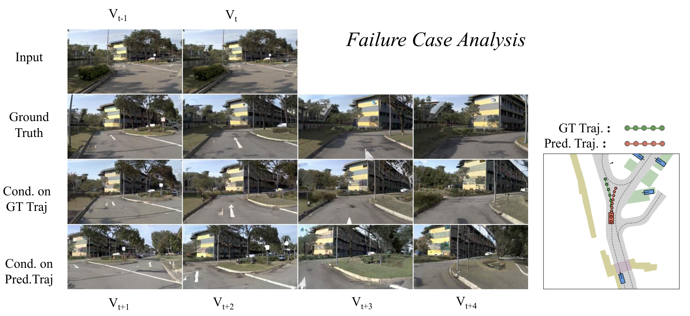
Original failure-case figure: ambiguity in driving commands
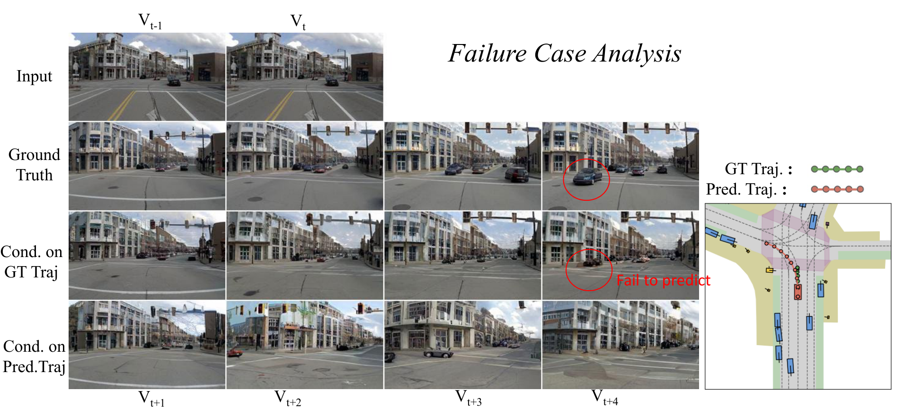
Original failure-case figure: dynamic object prediction
世界模型误判动态物体或道路拓扑。
轨迹与预测视频保持一致,但一致的是错误未来。
不必要停车、错误转向或错过潜在冲突。
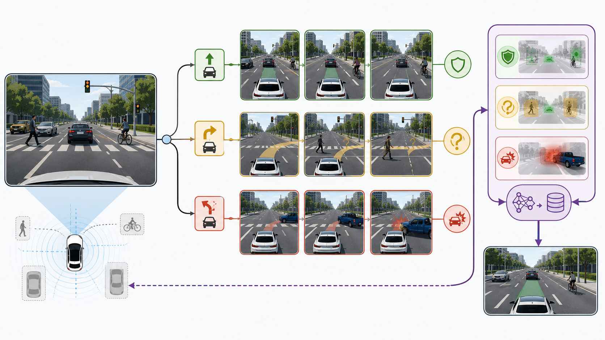
这张图把同一观测场景分叉成多条候选未来,突出安全、指令歧义和动态物体误判三类路径,用于解释失败案例如何反向暴露世界模型盲点;它不是论文原图。
本 HTML 版按用户最新要求重排图像:优先使用论文原文作者图,再补机制/流程解释图;旧版从表格重绘的 matplotlib 数据图不再进入正文阅读流。
| 类别 | 数量 | 内容 | 当前处理 |
|---|---|---|---|
| 原论文作者图 | 16 | 论文源码包 iclr2026_figures/*.pdf 转出的 Figure 1-16 |
已复制到 assets/paper_fig*.png,尽量放在对应解读段落,其余放入原论文图像附录 |
| 机制/流程 HTML 面板 | 5 | supervision deficit、双 WM、Joint Attention、两阶段训练、失败链路 | 使用网页原生布局展示,随缩放自动贴合阅读区 |
| Mermaid 原理图 | 7 | 原飞书解析中的架构/数据流/训练流程白板 | 在 HTML 中保留为 Mermaid 源码渲染,并提供 source fallback |
| 生成解释图 | 4 | supervision deficit、dual world-model loop、Joint Attention、counterfactual rollout/failure diagnosis | 明确标注为 Generated explanatory visual,只解释原理和流程,不冒充论文原图 |
| 旧数据图 | 5 | data scaling、decoder reversal、generalization flip、field positioning、FID/latency | 已取消正文展示,文件移入 _omitted_data_visualizations/,避免重复绘制实验指标 |
SECTION_END_SENTINEL_20260614_DRIVEVLA_W0_CODEX
以下集中列出正文未就近展示的作者原图,全部来自 arXiv 源码包并已转为本地 PNG。
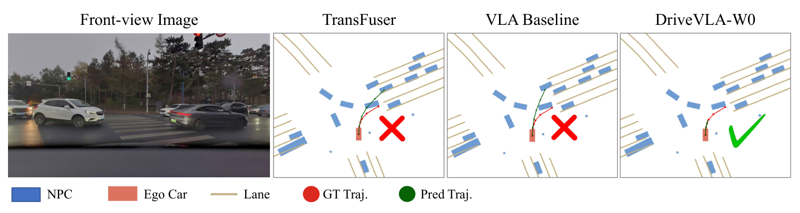
Original paper appendix figure 7
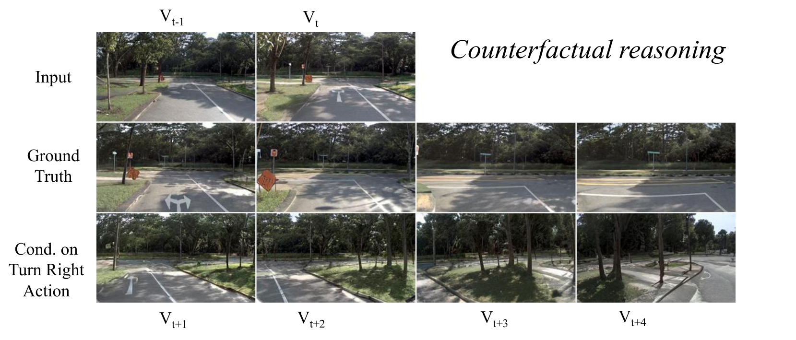
Original paper appendix figure 15
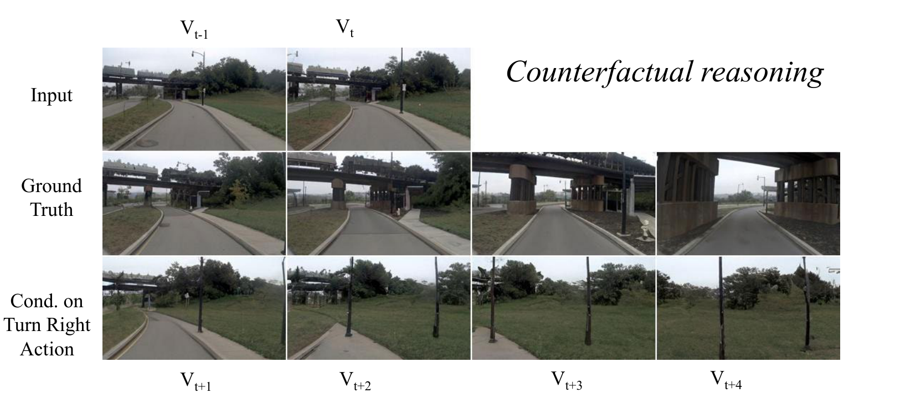
Original paper appendix figure 16
本 HTML 从本地已验证 Markdown 结果生成,没有重写论文结论。下方保留 Codex closure 与 reviewer fallback 摘要。
## Codex execution closure - 2026-06-14
<callout emoji="white_check_mark" background-color="light-green">
This closure records the final Codex-side execution state after applying the paper-learning-workflow Codex adapter and PUA fallback checks.
</callout>
| Item | Evidence |
|-|-|
| Skill compatibility | `~/.codex/skills/paper-learning-workflow` validated by `quick_validate.py`: Skill is valid |
| Codex adapter | `references/codex_adapter.md` loaded and used for path/tool/reviewer fallback mapping |
| Feishu document | `https://mi.feishu.cn/wiki/NcgcwJdTIix0p0khd6Ic54kgn3d`, doc token `HJhldfylDol8Vrxg8DxcZJrenPb` |
| Text integrity | chunks 01-15 re-written and each chunk sentinel read back |
| Formula source lint | `sanitize_formulas.py --check-only`: 0 residual issues |
| Formula post-write fallback | `docx read` full text has final sentinel, no literal `equation tag` tags, no dangerous inline LaTeX text-run patterns; 9 intended formula areas sampled by keyword/block checks, bad formula blocks = 0 |
| Whiteboards | 7 imported; node counts: fig1=17, fig2=19, fig3=17, fig4=19, fig5=16, fig6=17, fig12=23 |
| Images | 5 uploaded; dimensions: 1785x705, 1785x740, 1635x734, 1634x1108, 1785x660; bad_100x100=0 |
| Reviewer fallback | `review_resolution.md`: CLEAN, no BLOCKING issue |
| Phase 5 learnings | `~/.cache/arxiv_papers/_learnings/end-to-end-AD/2510.12796-LEARNINGS.md` |
| PUA fallback | Full `docx blocks` endpoint repeatedly returned Feishu 99991400, so the workflow switched to equivalent targeted lower-level checks instead of waiting silently |
CODEX_CLOSURE_SENTINEL_20260614_DRIVEVLA_W0
# DriveVLA-W0 Codex Main-thread Reviewer Fallback
Scope: review the Feishu read-back markdown after Codex-compatible paper-learning-workflow execution.
## Verdict
CLEAN: no BLOCKING issue found in the five required review dimensions.
## Five-dimension review
1. Concept dependency: PASS. The document starts with a prerequisite concept table covering VLA, VLM, supervision deficit, AR/Diffusion WM, FAST, MoE Action Expert, Joint Attention, PDMS/EPDMS, BoN, adaLN-Zero, CFG, Beta sampling, Anchor Q-Former, and pre_action.
2. Logic continuity: PASS. The main argument follows supervision deficit -> world-model auxiliary training -> scaling/generalization evidence -> action expert deployment -> code/repro gaps.
3. Figure-text alignment: PASS with note. Seven whiteboards were imported and verified by node count; five PNG figures were uploaded as figure appendix/body media. Exact in-place PNG anchoring was not attempted because full docx blocks list was rate-limited, but block-level image dimensions are verified.
4. Paper-vs-code coverage: PASS. The document includes paper/code gap analysis, issue/PR findings, unreleased Qwen path, action-leak issue, hidden hyperparameters, and reproduction caveats.
5. Practical reproducibility: PASS. The document includes environment, data, training commands, GPU estimates, key hyperparameters, and pitfalls.
## Residual risk
Full-document `feishu docx blocks` remained rate-limited by Feishu code 99991400, so the global verifier was replaced by targeted evidence: `docx read` full text checks, nine local formula block checks, whiteboard nodes, and image block dimensions.
本节是对前文的增量补充，不替换既有论文翻译、原图、公式或实验记录。阅读顺序固定为：图稿 → 图中全部细节 → 机制原理 → 源码锚点 → 一个可手算的例子 → 实验含义。
下列六张图是当前报告中的候选/来源资产，已逐图执行视觉审校并按 figure_audit_20260828.json 留存结果：4 张 generated_*.png 因缺少中文标签和可核对细节被拒收，2 张 paper_fig*.png 明确是论文原图、不能计入新生成图。当前环境本回合未暴露 paper-comic 的原生图像生成 callable，因此本节不把这些候选图宣称为正式高密度 paper-figure；正文、源码、六份事实合同和替换入口已准备完毕，待原生图工具重新挂载后逐张生成并通过视觉验收。
左侧“稀疏动作标签”表示一个驾驶片段通常只给一条未来轨迹，监督密度随时间和空间迅速变稀；中部将同一历史观测与动作条件送入世界模型，要求预测未来图像/视觉 token，因而每个未来位置都产生自监督误差信号；右侧把 VLA 动作损失与世界模型视觉损失并列，说明增强来自共享表征而不是推理时额外调用世界模型。图中箭头方向必须是“观测+动作 → 未来视觉 → 辅助损失 → 共享骨干更新”，不能画成“未来视觉直接替代动作标签”。
机制对应：离散 VQ 路径对未来视觉 token 做自回归交叉熵；连续 ViT 路径在潜空间做去噪/流匹配式视觉重建。论文的核心因果链是密集预测目标缓解 supervision deficit，从而让更多驾驶帧继续带来有效梯度。
图左的 VQ 分支必须出现“图像 → VQ 编码 → 离散视觉 token → AR next-token prediction → VQ 解码图像”的闭环；图右的 ViT 分支必须出现“连续视觉特征 → 加噪潜变量 → 条件去噪网络 → 未来连续特征/图像”的闭环。两分支共享历史驾驶上下文与动作条件，但输出空间不同：一个是词表上的离散分类，一个是连续空间中的向量场或噪声回归。图中如果出现同一套 loss、同一个解码器或把 VQ token 当作 ViT 特征，均属于事实错误。
源码联读：仓库的配置文件将 vision_loss_weight 与 action_config 分开；论文正文则以统一的总损失描述两类实例。复现时必须先确认当前 checkpoint 走的是 moe_fast_video_pretrain.json 还是 moe_fast_video.json，因为视觉损失权重并不相同。
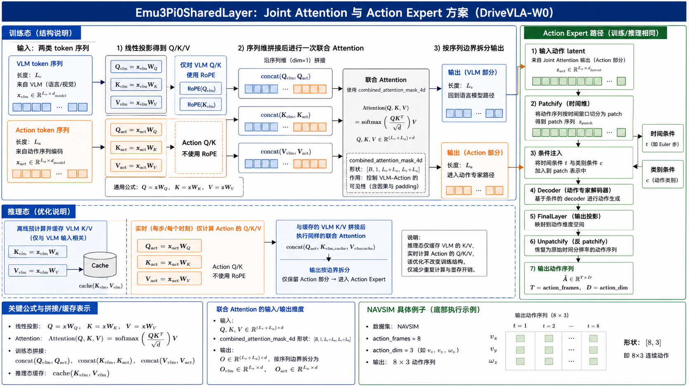
图中应把训练态和推理态分开：训练态由 VLA expert 与 Action expert 分别计算 Q/K/V，VLM Q/K 使用 RoPE、Action Q/K 不使用 RoPE；两路张量沿序列维拼接后执行一次联合注意力，再按原序列长度拆回各自残差与 MLP。推理态则缓存 VLM 的 Krope/V，只实时计算 Action Q/K/V，让 Action Q 同时关注“缓存 VLM K/V + 实时 Action K/V”。这才是源码中的低延迟关键，而不是简单把两路 hidden state 相加。
实现锚点：真正的 Pi0-style Joint Attention 位于 reference/Emu3/emu3/mllm/modeling_emu3.py:1726 的 Emu3Pi0SharedLayer；:1785-1809 计算并拼接双路 Q/K/V，:1818-1848 完成联合注意力、拆分和双路残差/MLP，:1852-1923 实现缓存 VLM K/V 的推理路径。NAVSIM 训练脚本使用 action_frames=8、action_dim=3。仓库中的 models/policy_head/moe_experts.py 是另一条包含 patchify、AdaLN 和 unpatchify 的独立动作网络实现，不能与 Emu3Pi0SharedLayer 混为同一段代码。
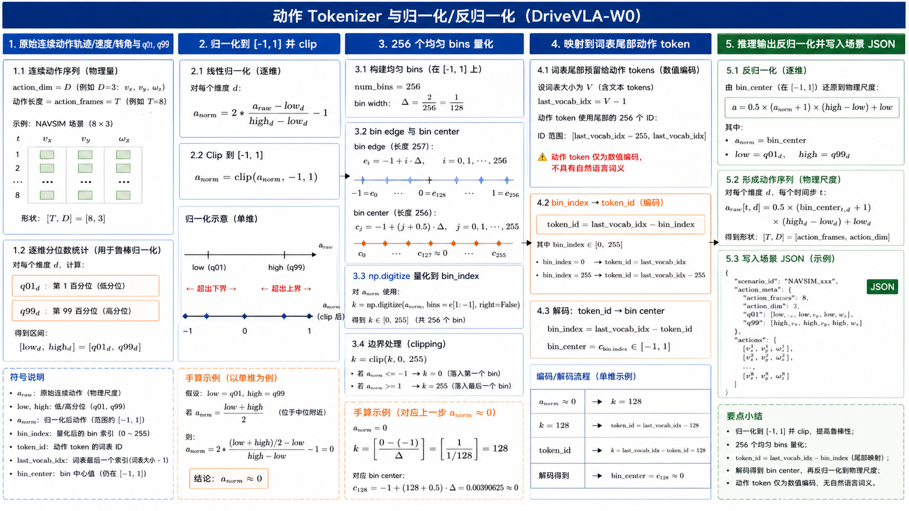
这张论文原图用于核对图解 03 的拓扑：输入端是多视角/历史上下文，中间是 VLA backbone 与 action expert 的交互，输出端是未来动作序列。阅读时要区分“训练期的世界模型辅助分支”和“推理期的动作专家”：前者提供额外视觉监督，后者承担低延迟的动作生成；两者不是同一个 head，也不能把 world-model rollout 画成每次车辆控制都必经的在线环节。
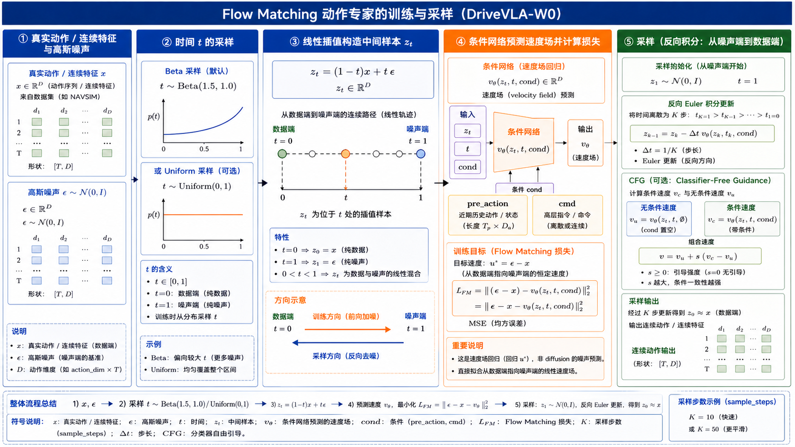
图中横向比较应至少保留三种解码器：query-based、AR、flow matching；纵向含义是推理延迟而不是训练 loss。Query-based 的固定 query 数带来近似恒定延迟；AR 逐 token 生成，序列长度增加会带来线性增长；flow matching 的步数固定时延迟近似恒定但单步网络调用成本更高。正文已有“约 74 ms、约 145 ms”等报告数值时，图注必须说明它们来自对应实验设置，不能推广为所有硬件/分辨率下的绝对延迟。
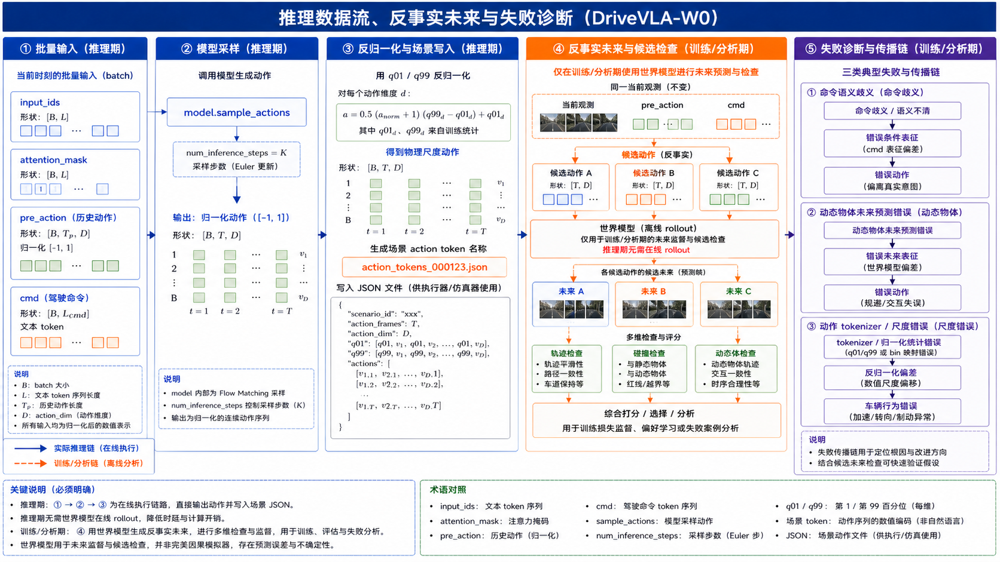
图中应把“当前观测”与“候选动作”作为两个独立输入，并画出多个候选未来，而不是只画一条确定性预测；每条 rollout 都必须标注动作条件、未来帧、轨迹/碰撞检查和最终选择或训练信号。失败诊断要区分三类错误：命令语义歧义、动态物体未来预测错误、动作解码/归一化错误。图中不能暗示模型拥有真实世界中的完美反事实因果模型；它学习的是数据分布上的条件未来预测，错误的未来视觉会把错误梯度传给动作头。
models/tokenizer/action_tokenizer.py:24-34 先在 [-1,1] 上均匀建立 256 个 bin，并把动作 token 放到词表尾部；:36-41 对动作 clip 后用 np.digitize 分箱，再用 last_vocab_idx - discretized_action 反向映射为 token id；:82-90 在反解码前处理边界，避免最后一个 digitize index 越过 bin_centers。
action = np.clip(action, -1, 1)
discretized_action = np.digitize(action, self.bins)
token_ids = self.last_vocab_idx - discretized_action手算例子：假设归一化横向动作为 0.0，256 个端点从 -1 到 1，digitize 得到大约中间 bin；模型生成 token 后再反向查找 bin center，最后用场景的 action_low/action_high 做反归一化。该过程解释了为什么“动作 token 看似是文本”并不意味着语义词义：它只是把连续控制值借用到词表的稀疏尾部。
models/policy_head/flow_matching.py:19-37 用 Uniform 或 Beta(1.5,1.0) 采样时间；:49-58 构造 z_t=(1-t)x+tε，令网络预测速度/残差并以 (ε-x-vθ)^2 做 MSE；:65-80 在采样时从噪声状态反向 Euler 更新，并可用 classifier-free guidance 合并条件与无条件速度场。
t = sample_t(batch)
z1 = torch.randn_like(x)
zt = (1 - t) * x + t * z1
vtheta = model(zt, t, cond)
loss = ((z1 - x - vtheta) ** 2).mean()因此图中箭头必须从“数据动作/特征”指向“噪声端”的加噪训练路径，同时采样箭头从噪声端反向回到动作端；把训练和采样画成同一个方向会误导读者。
Pi0-style 共享层：reference/Emu3/emu3/mllm/modeling_emu3.py:1726-1923 对 VLM/Action 两路 Q/K/V 做联合注意力，并支持推理时缓存 VLM K/V。独立 patch 网络：models/policy_head/moe_experts.py:277-310 则把 B×C×H×W 张量 patchify，经时间/类别条件、decoder 和 FinalLayer 后 unpatchify。两者体现不同工程路径；图解与复现必须先确认 checkpoint/训练脚本实际实例化的是哪一个类，不能把 patchify/AdaLN 细节强行画入所有 Joint Attention 配置。
inference/vla/inference_action_navsim_flow_matching_vava.py:168-179 从配置读取采样步数，输入 input_ids、attention_mask、pre_action、cmd 并调用 model.sample_actions；:181-196 用 q01/q99 统计反归一化，按场景 token 名称写出 JSON。因而数据流图必须包含“归一化动作 → 采样 → 反归一化 → 结果文件”四个节点。
predicted_action = model.sample_actions(..., pre_action, cmd,
num_inference_steps=num_inference_steps)
action_denorm = 0.5 * (predicted_action + 1) * (action_high - action_low) + action_low
json.dump({"action": action_denorm.tolist()}, output_file)| 读者问题 | 公式层 | 代码层 | 实验/复现含义 |
|---|---|---|---|
| 为什么未来帧能提供密集监督？ | L=L_action+λL_world；每个未来视觉位置产生误差 | 视觉损失配置与动作配置分离 | 大数据规模下世界模型增益更明显，但需核对数据分布与权重 |
| 为什么 VQ 与 ViT 要两条路径？ | 离散 CE vs 连续去噪/向量场 MSE | 不同 backbone/tokenizer/config | 不能用单一 decoder 结论替代双架构比较 |
| 为什么 Action Expert 更快？ | 固定长度/少层数动作分支减少解码成本 | 2-layer action config、patchify/unpatchify | 延迟依赖采样步数、硬件和输出 horizon |
| 为什么复现时动作会偏尺度？ | 模型输出在归一化空间 | q01/q99 反归一化与 256-bin 边界处理 | 遗漏统计文件会导致轨迹尺度错误，不能归因于模型能力 |
2510.12796v2，源码 commit 为 a55766ce46ee55d9035b93816e57b8d933166482。